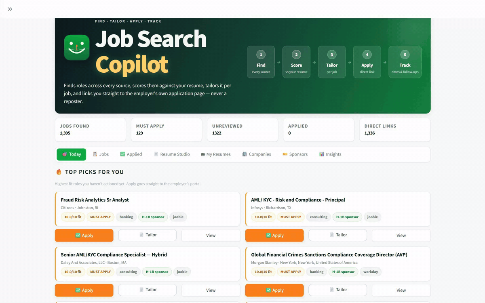
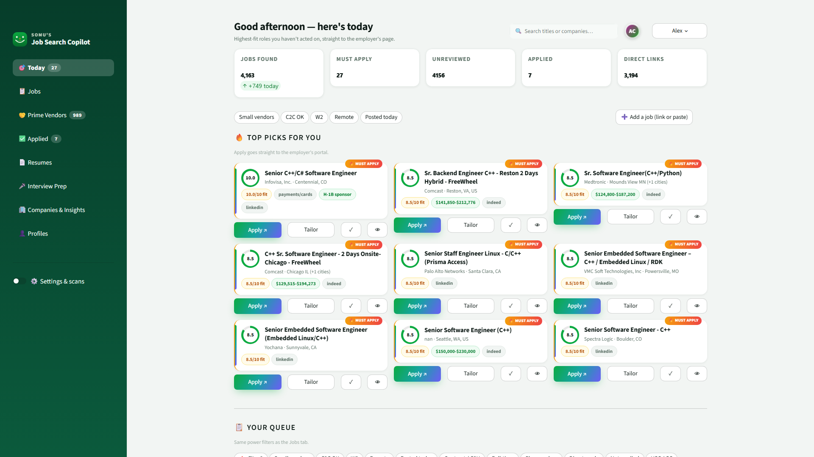
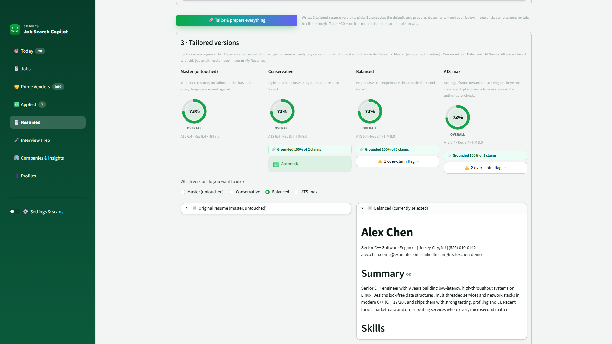
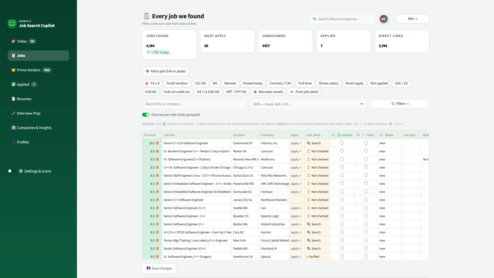
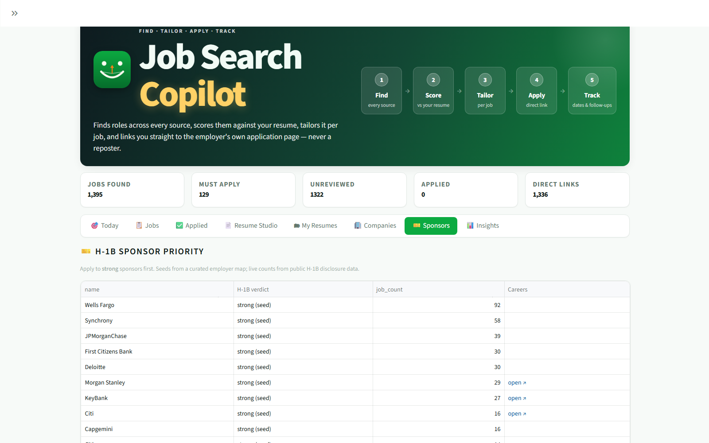

Find the right jobs, tailor an honest resume for each one, and apply on the employer's own site.
A public demo on sample data is on the way. Until then, book a call and I'll walk you through the real app.

Narrated walkthrough on a fictional candidate's profile: daily AI job matching across job boards, career sites, staffing vendors, C2C Google Groups and your Gmail; one row per role across cities; work-authorization filters; add any job by link; fact-checked AI resume tailoring; an AI interview coach with on-camera mock interviews and recording review; applications that update from your email; and top picks on Telegram.
Scans job boards, employers' own career sites and job-search APIs daily, then links you to the employer's posting instead of a reposter.
Rates fit 1–10 with keyword relevance plus meaning-based matching, so "fraud analytics" still matches "financial crime".
Writes three resume versions per job and traces every claim back to your real experience, flagging anything it can't support.
Every application, its status, and the exact resume version you sent, so you're ready when a recruiter calls.
Jobs from staffing primes, implementation partners, boutique recruiters and C2C groups, with W2 / C2C / contract terms read from each posting.
A cover letter written only from your resume, plus likely interview questions with STAR answers and a practice box that grades you.



